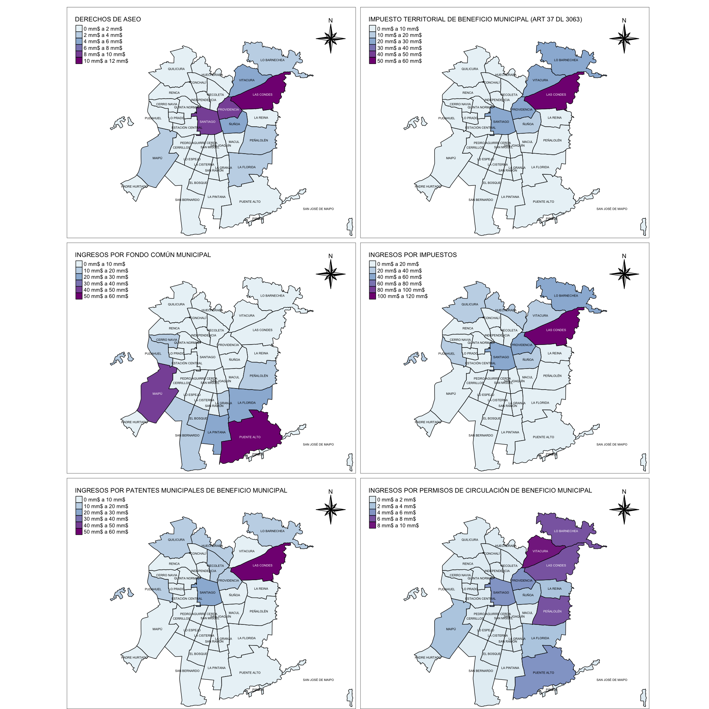
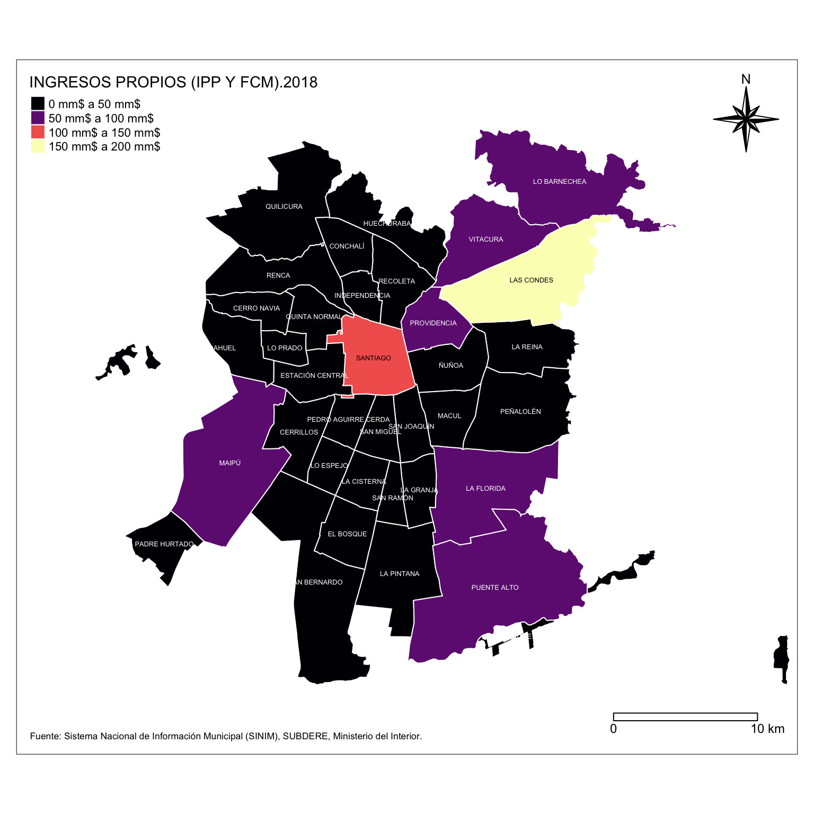
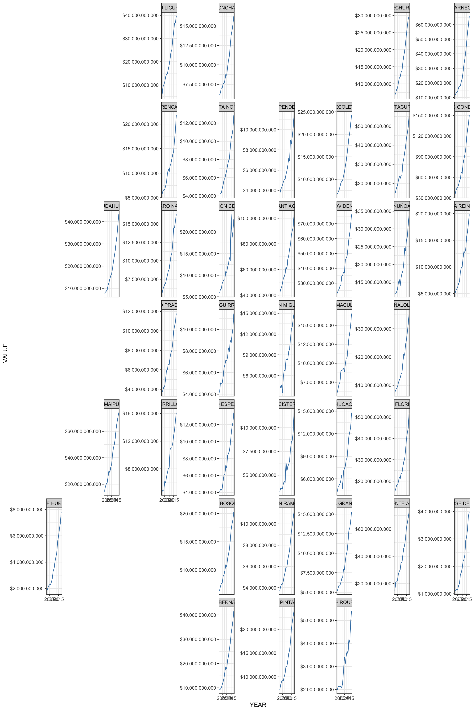

Chilean Municipalities Information System Wrapper
What can I do with this?
This R package allows easy SINIM (http://sinim.gov.cl) data retrieval what have advantages over the site:
- When you work with multiple variables or years it will be very useful for rapid analyses.
- Fast ploting directly from data source using the included geometries.
- Data download with or without monetary correction using a switch.
library(tmap)
library(dplyr)
library(stringr)
library(sinimr)
library(sf)
data_sinim <- get_sinim(var = c(3954,4174,880,1226,4251,4173),
year = 2018,
geometry = T,
unit = "limites",
region = "13",
truevalue = T)
comunas <- c("CERRILLOS", "LA REINA", "PUDAHUEL", "CERRO NAVIA", "LAS CONDES",
"QUILICURA", "CONCHALÍ", "LO BARNECHEA", "QUINTA NORMAL", "EL BOSQUE",
"LO ESPEJO", "RECOLETA", "ESTACIÓN CENTRAL", "LO PRADO", "RENCA", "HUECHURABA",
"MACUL", "SAN MIGUEL", "INDEPENDENCIA", "MAIPÚ", "SAN JOAQUÍN", "LA CISTERNA", "ÑUÑOA",
"SAN RAMÓN", "LA FLORIDA", "PEDRO AGUIRRE CERDA", "SANTIAGO", "LA PINTANA", "PEÑALOLÉN",
"VITACURA", "LA GRANJA", "PROVIDENCIA", "SAN BERNARDO", "PUENTE ALTO", "PADRE HURTADO", "PIRQUE",
"SAN JOSÉ DE MAIPO")
var <- data_sinim %>% filter(MUNICIPALITY %in% comunas)
namevar <- var %>% select(-MUNICIPALITY,-CODE) %>% st_set_geometry(NULL) %>% names()
sd <- tm_shape(var) +
tm_fill(col = namevar,
palette = "BuPu",
border.col = "white",
border.alpha = 0.5,
lwd=1,
style = "pretty",
title = namevar %>% stringr::str_remove("\\.\\d+"))+
tm_text("MUNICIPALITY", size = 0.4) +
tm_style("white", frame = T, legend.title.size = 1, legend.width=1) +
tm_layout(inner.margins = c(0.01, 0.15, 0.15, 0.01),
outer.margins = c(0, 0.01, 0.01, 0),
design.mode=F,
legend.format = list(text.separator = "a",
fun = function(x) paste0(formatC(x/1e9, digits = 0, format = "f"), " mm$")))+
tm_compass(type = "8star", position = c(.85, .80)) +
tm_borders(col = 'black')
sd
Support
FONDECYT Regular 2016 Nº 1161417, ¿Quién es responsable del desarrollo local? Una geografía política del neoestructuralismo en “comunas de exportación” (Comisión Nacional de Investigación Científica y Tecnológica).
A note on usage
When querying the API, please be respectful of the resources required to provide this data. Please retain the results for each request to avoid repeated requests for duplicate information.
How do I use it?
sinimR comes with a small set of functions to deliver the content of SINIM’s webpage. To get a first glance of the categories of information what are available please use the get_sinim_cats() command.
library(sinimr)
get_sinim_cats()
#> $`-`
#> VARIABLE CODE
#> 1 * SIM FIMU 539
#>
#> $`01. ADMINISTRACION Y FINANZAS MUNICIPALES`
#> VARIABLE CODE
#> 1 A.1. PRESUPUESTO INICIAL Y VIGENTE MUNICIPAL (M$) 517
#> 2 A. INGRESOS MUNICIPALES (M$) 21
#> 3 B. INGRESOS MUNICIPALES (%) 191
#> 4 C. GASTOS MUNICIPALES (M$) 22
#> 5 D. GASTOS MUNICIPALES (%) 172
#> 6 E. GASTOS EN PERSONAL 169
#> 7 F. TRANSFERENCIAS E INVERSION 170
#> 8 G. SERVICIOS BASICOS Y GENERALES 370
#> 9 I. TRANSFERENCIAS Y COMPENSACIONES SUBDERE 485
#> 10 J. FONDO COMÚN MUNICIPAL (FCM) 508
#> 11 K. GESTION MUNICIPAL 486
#> 12 L. 24
#> 13 M. 506
#>
#> $`02. RECURSOS HUMANOS MUNICIPAL`
#> VARIABLE CODE
#> 1 A. PERSONAL DE PLANTA 381
#> 2 B. PERSONAL A CONTRATA 382
#> 3 C. HONORARIOS 383
#> 4 D. CÓDIGO DEL TRABAJO 523
#> 5 D. OTROS INDICADORES 384
#>
#> $`03. EDUCACION MUNICIPAL`
#> VARIABLE CODE
#> 1 A. ANTECEDENTES GENERALES DE EDUCACION 38
#> 2 B. ASISTENCIA Y MATRÍCULAS EN EDUCACION 32
#> 3 C. RESULTADOS PSU 33
#> 4 D. INGRESOS EN EDUCACION MUNICIPAL 35
#> 5 E. GASTOS EN EDUCACION MUNICIPAL 36
#> 6 F. RECURSOS HUMANOS EN SECTOR EDUCACION 34
#> 7 G. ESTABLECIMIENTOS DE EDUCACION MUNICIPAL 379
#>
#> $`04. SALUD MUNICIPAL`
#> VARIABLE CODE
#> 1 A. ANTECEDENTES GENERALES DE SALUD 30
#> 2 B. COBERTURA EN SALUD MUNICIPAL 25
#> 3 C. INGRESOS EN SALUD MUNICIPAL 26
#> 4 D. GASTOS EN SALUD MUNICIPAL 28
#> 5 E. RED ASISTENCIAL SALUD 31
#> 6 F. RECURSOS HUMANOS EN SALUD 362
#>
#> $`05. SOCIAL Y COMUNITARIA`
#> VARIABLE CODE
#> 1 A. INFORMACION ENCUESTA CASEN 47
#> 2 B. RED SOCIAL (SUBSIDIOS Y PENSIONES) 44
#> 3 C. INTERMEDIACION LABORAL 43
#> 4 D. ORGANIZACIONES COMUNITARIAS 46
#> 5 E. BECAS 377
#> 6 F. PARTICIPACIÓN CIUDADANA 510
#> 7 G. DISCAPACIDAD 512
#> 8 H. PREVENCIÓN DEL DELITO 511
#>
#> $`06. DESARROLLO Y GESTION TERRITORIAL`
#> VARIABLE CODE
#> 1 A. CARACTERISTICAS TERRITORIALES 39
#> 2 B. SERVICIOS BASICOS A LA COMUNIDAD 41
#> 3 C. INFRAESTRUCTURA 40
#> 4 D. CATASTRO PREDIOS Y VALORACION CATASTRAL 300
#> 5 E. AREAS VERDES 376
#> 6 F. PLAN DE DESARROLLO COMUNAL (PLADECO) 304
#> 7 G. PLAN REGULADOR COMUNAL 42
#>
#> $`07. CARACTERIZACION COMUNAL`
#> VARIABLE CODE
#> 1 A. GEOGRAFICO ADMINISTRATIVA 49
#> 2 B. POBLACION 50
#>
#> $`08. GENERO`
#> VARIABLE CODE
#> 1 A. DOTACION FUNCIONARIA Y PROFESIONAL DE MUJERES 262
#>
#> $`09. CEMENTERIO`
#> VARIABLE CODE
#> 1 1. INFORMACION GENERAL 516
#> 2 A. INGRESOS CEMENTERIO (M$) 456
#> 3 B. GASTOS CEMENTERIO (M$) 457Every category have a bunch of variables associated. Use the CODE number and the get_sinim_vars() function to get them.
get_sinim_vars(517)
#> VARIABLE UNIT CODE
#> 108 Presupuesto Inicial Sector Municipal M$ 4210
#> 109 Presupuesto Inicial Gastos Municipales M$ 4211
#> 110 Presupuesto Vigente Sector Municipal M$ 4212
#> 111 Presupuesto Vigente Gastos Municpiales M$ 4213
#> 112 Presupuesto Vigente Saldo Inicial de Caja Sector Municipal M$ 4226Finally, to obtain the data across municipalities use the code column and specify a year.
head(get_sinim(c(4210,4211),2015))
#> CODE MUNICIPALITY YEAR VARIABLE VALUE
#> 1 01101 IQUIQUE 2015 PRESUPUESTO INICIAL GASTOS MUNICIPALES 34245763
#> 2 01107 ALTO HOSPICIO 2015 PRESUPUESTO INICIAL GASTOS MUNICIPALES 9957966
#> 3 01401 POZO ALMONTE 2015 PRESUPUESTO INICIAL GASTOS MUNICIPALES 7457210
#> 4 01402 CAMIÑA 2015 PRESUPUESTO INICIAL GASTOS MUNICIPALES 1280727
#> 5 01403 COLCHANE 2015 PRESUPUESTO INICIAL GASTOS MUNICIPALES 2067156
#> 6 01404 HUARA 2015 PRESUPUESTO INICIAL GASTOS MUNICIPALES 3170237You can get multiple years too! use the command get_sinim() and add more years as in the example.
head(get_sinim(880,2015:2017))
#> CODE MUNICIPALITY YEAR VARIABLE VALUE
#> 1 01101 IQUIQUE 2017 INGRESOS POR FONDO COMÚN MUNICIPAL 3342108
#> 2 01107 ALTO HOSPICIO 2017 INGRESOS POR FONDO COMÚN MUNICIPAL 7051989
#> 3 01401 POZO ALMONTE 2017 INGRESOS POR FONDO COMÚN MUNICIPAL 1834687
#> 4 01402 CAMIÑA 2017 INGRESOS POR FONDO COMÚN MUNICIPAL 1580275
#> 5 01403 COLCHANE 2017 INGRESOS POR FONDO COMÚN MUNICIPAL 1123179
#> 6 01404 HUARA 2017 INGRESOS POR FONDO COMÚN MUNICIPAL 1366952The geometries are available using the geometry==T argument.
head(get_sinim(882,2015:2017, geometry=T))
#> Simple feature collection with 6 features and 5 fields
#> geometry type: MULTIPOLYGON
#> dimension: XY
#> bbox: xmin: -70.28665 ymin: -21.63061 xmax: -68.40454 ymax: -18.9369
#> epsg (SRID): 4326
#> proj4string: +proj=longlat +datum=WGS84 +no_defs
#> CODE MUNICIPALITY INGRESOS PROPIOS (IPP Y FCM).2017
#> 1 01101 IQUIQUE 36847050
#> 2 01107 ALTO HOSPICIO 11054686
#> 3 01401 POZO ALMONTE 4547414
#> 4 01402 CAMIÑA 1683404
#> 5 01403 COLCHANE 1257502
#> 6 01404 HUARA 2472729
#> INGRESOS PROPIOS (IPP Y FCM).2016 INGRESOS PROPIOS (IPP Y FCM).2015
#> 1 35586455 34139969
#> 2 10600513 10386815
#> 3 5714872 5630945
#> 4 1651371 1609920
#> 5 1256502 1183905
#> 6 2566803 2624107
#> geometry
#> 1 MULTIPOLYGON (((-70.09894 -...
#> 2 MULTIPOLYGON (((-70.1095 -2...
#> 3 MULTIPOLYGON (((-68.86081 -...
#> 4 MULTIPOLYGON (((-69.31789 -...
#> 5 MULTIPOLYGON (((-68.65113 -...
#> 6 MULTIPOLYGON (((-69.39615 -...If you don’t know what are you looking for use search_sinim_vars()to get search results based on variable descriptions, names and groups.
search_sinim_vars("cementerio")
#> CODE
#> 350 4140
#> 351 4141
#> 352 4406
#> 353 4407
#> VARIABLE
#> 350 Ingresos Cementerio (Ingreso Total Percibido)
#> 351 Gastos Cementerio (Gasto Total Devengado)
#> 352 ¿La Municipalidad o Corporación administra Cementerio?
#> 353 Si la Municipalidad o Corporación administra Cementerio, indique si tiene presupuesto propio. SI = presupuesto propio o independiente.
#> DESCRIPTION
#> 350 Ingreso total percibido del sector Cementerio (clasificador presupuestario)
#> 351 Gastos total devengado sector Cementerio (clasificador presupuestario).
#> 352 Indica si la Municipalidad o Corporación administra o no Cementerio Municipal, ya sea con presupuesto propio o asociado a otro sector de la municipalidad o corporación.
#> 353 Indica si administra un presupuesto independiente o anexo a otro sector de la municipalidad, como Salud, Municipalidad, etc.
#> AREA SUBAREA UNIT
#> 350 09. CEMENTERIO A. INGRESOS CEMENTERIO (M$) M$
#> 351 09. CEMENTERIO B. GASTOS CEMENTERIO (M$) M$
#> 352 09. CEMENTERIO 1. INFORMACION GENERAL S-N
#> 353 09. CEMENTERIO 1. INFORMACION GENERAL S-NOn advanced usage please have a look in the documentation included.
Other example plots
library(dplyr)
library(sinimr)
library(sf)
library(tmap)
comunas <- c("CERRILLOS", "LA REINA", "PUDAHUEL", "CERRO NAVIA", "LAS CONDES",
"QUILICURA", "CONCHALÍ", "LO BARNECHEA", "QUINTA NORMAL", "EL BOSQUE",
"LO ESPEJO", "RECOLETA", "ESTACIÓN CENTRAL", "LO PRADO", "RENCA", "HUECHURABA",
"MACUL", "SAN MIGUEL", "INDEPENDENCIA", "MAIPÚ", "SAN JOAQUÍN", "LA CISTERNA", "ÑUÑOA",
"SAN RAMÓN", "LA FLORIDA", "PEDRO AGUIRRE CERDA", "SANTIAGO", "LA PINTANA", "PEÑALOLÉN",
"VITACURA", "LA GRANJA", "PROVIDENCIA", "SAN BERNARDO", "PUENTE ALTO", "PADRE HURTADO", "PIRQUE",
"SAN JOSÉ DE MAIPO")
var <- get_sinim(882, 2018, truevalue = T, geometry = T, unit = "limites") %>% filter(MUNICIPALITY %in% comunas)
reg.13.plot <- tm_shape(var) +
tm_polygons(names(var)[3], palette="magma", border.col = "white") +
tm_text(names(var)[2], size = 0.4, style="jenks") +
tm_legend(legend.position = c("left", "top")) +
tm_compass(type = "8star", position = c("right", "top")) +
tm_scale_bar(breaks = c(0, 10), size = 0.75, position = c("right", "bottom"), width = 1) +
tm_credits("Fuente: Sistema Nacional de Información Municipal (SINIM), SUBDERE, Ministerio del Interior.", position=c("left", "bottom"), size=0.55)+
tm_layout(inner.margins = c(0.1, 0.1, 0.10, 0.01), legend.format = list(text.separator = "a", fun = function(x) paste0(formatC(x/1e9, digits = 0, format = "f"), " mm$")))
reg.13.plot
library(sf)
library(dplyr)
library(geofacet)
library(sinimr)
library(ggplot2)
library(zoo)
library(scales)
library(ggpubr)
comunas <- c("CERRILLOS", "LA REINA", "PUDAHUEL", "CERRO NAVIA", "LAS CONDES",
"QUILICURA", "CONCHALÍ", "LO BARNECHEA", "QUINTA NORMAL", "EL BOSQUE",
"LO ESPEJO", "RECOLETA", "ESTACIÓN CENTRAL", "LO PRADO", "RENCA", "HUECHURABA",
"MACUL", "SAN MIGUEL", "INDEPENDENCIA", "MAIPÚ", "SAN JOAQUÍN", "LA CISTERNA", "ÑUÑOA",
"SAN RAMÓN", "LA FLORIDA", "PEDRO AGUIRRE CERDA", "SANTIAGO", "LA PINTANA", "PEÑALOLÉN",
"VITACURA", "LA GRANJA", "PROVIDENCIA", "SAN BERNARDO", "PUENTE ALTO", "PADRE HURTADO", "PIRQUE",
"SAN JOSÉ DE MAIPO")
data <- get_sinim(882,2002:2018, moncorr = F) %>% filter(MUNICIPALITY %in% comunas)
data[5] <- data[5]*1000
data$YEAR <- as.numeric(as.character(data$YEAR))
data$YEAR <- as.Date(as.yearmon(data$YEAR, "1-%y"))
reg13 <- geogrid::read_polygons("https://raw.githubusercontent.com/robsalasco/precenso_2016_geojson_chile/master/Extras/GRAN_SANTIAGO.geojson")
#> Reading layer `R13' from data source `https://raw.githubusercontent.com/robsalasco/precenso_2016_geojson_chile/master/Extras/GRAN_SANTIAGO.geojson' using driver `GeoJSON'
#> Simple feature collection with 37 features and 8 fields
#> geometry type: POLYGON
#> dimension: XY
#> bbox: xmin: -70.84306 ymin: -33.65716 xmax: -70.43015 ymax: -33.31069
#> epsg (SRID): 4326
#> proj4string: +proj=longlat +datum=WGS84 +no_defs
grd <- grid_auto(reg13, seed = 1, names = "NOM_COMUNA", codes = "COMUNA")
#grid_preview(grd, label = "name_NOM_COMUNA")
#grid_design(grd, label = "name_NOM_COMUNA")
ggplot(data, aes(YEAR, VALUE, group=1)) +
geom_line(color = "steelblue") +
facet_geo(~ MUNICIPALITY, grid = grd, scales = "free_y")+
scale_x_date() +
scale_y_continuous(labels = dollar_format(suffix = "", prefix = "$", big.mark = ".", decimal.mark=","))+
theme_bw()
Citation
citation("sinimr")
#>
#> To cite package 'sinimr' in publications use:
#>
#> Roberto Salas (2019). sinimr: Chilean Municipalities Information
#> System Wrapper. R package version 0.2.3.
#> https://github.com/robsalasco/sinimr
#>
#> A BibTeX entry for LaTeX users is
#>
#> @Manual{,
#> title = {sinimr: Chilean Municipalities Information System Wrapper},
#> author = {Roberto Salas},
#> year = {2019},
#> note = {R package version 0.2.3},
#> url = {https://github.com/robsalasco/sinimr},
#> }